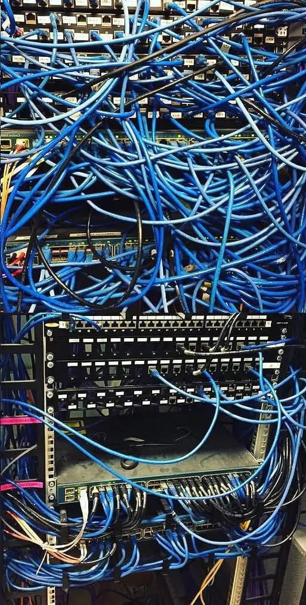
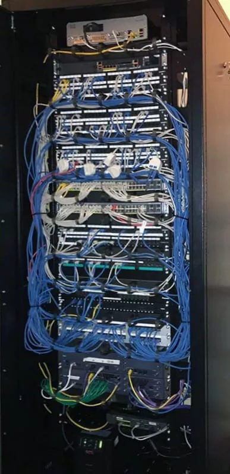

Réseau informatique
Installation et maintenance de réseaux LAN d’entreprises
Pourquoi implanter un câblage cuivre Ethernet en entreprise
?
Bien que le Wifi s’impose de plus en plus fréquemment comme
une solution d’installation rapide, le câblage filaire demeure
la solution de prédilection choisie pour créer les réseaux LAN
d’entreprise dés lors que l’on souhaite un débit effectif réel
de haute performance et avec une qualité de service optimale.
Les administrateurs réseau y ont recours également afin de
réduire les failles de sécurité en cantonnant les accès wifi
aux visiteurs.
La baie de brassage, centre névralgique de votre réseau
informatique

Avant

Après
Cette configuration, ou « topologie » est ainsi nommée, car
chaque liaison Ethernet est directement câblée du panneau de
brassage vers le poste de travail. Les avantages de ce
système de câblage résident d'une part dans la facilité de
maintenance par le technicien en charge, car l'état de tous
les composant est vérifié d'un seul lieu et d'autre part
dans la grande robustesse des liaisons informatiques.
Encore faut-il assurer un véritable suivi professionnel sur le long terme de la part des administrateurs en charge de la baie, sinon on se retrouve vite confronté à des difficultés!
Encore faut-il assurer un véritable suivi professionnel sur le long terme de la part des administrateurs en charge de la baie, sinon on se retrouve vite confronté à des difficultés!
DARIUM peut également vous proposer la mise en place de
planchers
techniques pour votre sale serveur et pour vos bureaux.
techniques pour votre sale serveur et pour vos bureaux.
 Demander un devis
Demander un devis
normalisation des prises informatique rj45
les connecteurs RI45 hien aidentinues d'asnect denis des
anneps ont en tait hien evolue nour devenir le standard
de communication quasiment
universel pour tous les réseaux de transports de données. Les prises Ethernet, via le protocole TCP/IP permettent non seulement de connecter les
équipements mais aussi les terminaux téléphoniques et depuis peu audiovisuels.
Leur taille normalisée permet leur implantation guelle aue soit la dimension de l'armoire ou du coffret choisi. Ainsi. oour une hauteur de 6 à 45U. avec une
profondeur minimale de 300 mm jusqu'à 1000 mm et des largeurs de 600 à 1000 mm, on utilisera les mêmes platines et connecteurs normalisés
universel pour tous les réseaux de transports de données. Les prises Ethernet, via le protocole TCP/IP permettent non seulement de connecter les
équipements mais aussi les terminaux téléphoniques et depuis peu audiovisuels.
Leur taille normalisée permet leur implantation guelle aue soit la dimension de l'armoire ou du coffret choisi. Ainsi. oour une hauteur de 6 à 45U. avec une
profondeur minimale de 300 mm jusqu'à 1000 mm et des largeurs de 600 à 1000 mm, on utilisera les mêmes platines et connecteurs normalisés